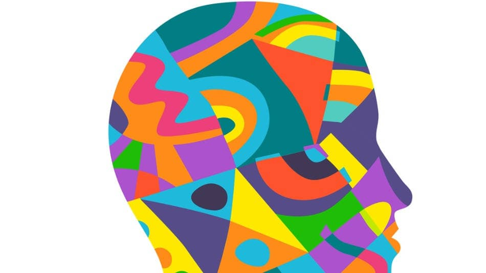

El conductismo se basa en el análisis de los comportamientos humanos a partir de los estímulos y respuestas que conforman el ambiente físico, biológico, y social del organismo. El comportamiento humano se rige por los refuerzos y castigos. El conductismo en psicología comenzó a desarrollarse a principios del siglo XX.
Se centra, por tanto, en analizar el comportamiento humano, entendido como la relación entre los estímulos y las respuestas de una persona, y no en un análisis del funcionamiento de la mente. Es decir, estudia las conductas humanas a partir de los estímulos y las respuestas que conforman el entorno del ser humano.
Así, el conductismo es una corriente psicológica basada en la ciencia del comportamiento, entendiendo este como la interacción del individuo con su ambiente, por lo que una persona se adapta e interacciona con el medio que le rodea. El conductismo intenta comprender cómo surgen y se mantienen las distintas formas de comportamiento.
Para ello, estudia al detalle las circunstancias previas a esa conducta humana (aspectos emotivos, sensoriales, motores y emotivos), así como las condiciones en las que se da esa interacción, con el objetivo de poder cambiarla en caso necesario.
El filósofo y psicólogo alemán Wilhelm Wundt fue el que sentó las bases de lo que en un futuro se erigiría como el conductismo en psicología. Algunos de sus principales representantes fueron John Broadus Watson, y B. F. Skinner.
Estímulo: cualquier incentivo, información o señal que provoca una respuesta en el individuo.
Respuesta: conducta de un organismo resultado de la reacción a un estímulo.
Condicionamiento: aprendizaje que surge tras el estudio de los estímulos y de las respuestas.
Refuerzo: consecuencia de una conducta humana que incrementa la posibilidad de que vuelva a reproducirse.
Castigo: lo contrario al refuerzo; consecuencia de una conducta humana que disminuye las probabilidades de que una conducta vuelva a reproducirse.
Esta corriente de la psicología incide en que únicamente el comportamiento puede ser estudiado; algo que en la práctica ha derivado en modelos terapéuticos guiados por la solución de los síntomas y en el cambio de comportamientos, y donde un comportamiento positivo se relaciona con refuerzos positivos y al revés.
Esta corriente de la psicología incide en que únicamente el comportamiento puede ser estudiado; algo que en la práctica ha derivado en modelos terapéuticos guiados por la solución de los síntomas y en el cambio de comportamientos, y donde un comportamiento positivo se relaciona con refuerzos positivos y al revés.